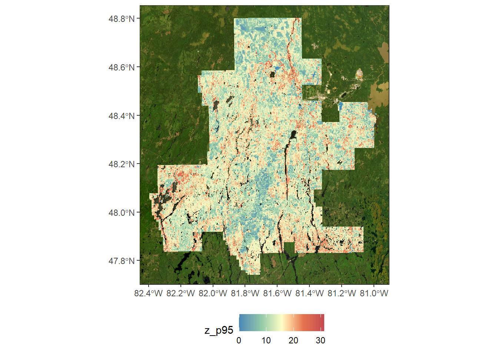
Data and methods
1 Summary of project methods
The workflow developed in this project consisted of three main components: automated stand delineation, assignment of forest inventory attributes to the resulting polygons, and performance assessment of the delineations. The main steps are summarized below and described in greater detail in the following sections.
1.Automated stand delineation (Section 2)
- Input data
- Segmentation algorithm
- Optimization of segmentation parameters
- Generation of Forest Management Unit-wide delineations
2.Construction of the polygon attribute table (Section 3)
- Input data
- Direct assignment of available forest attributes
- Imputation using a k-nearest neighbour (kNN) approach
3.Performance assessment (section 4)
- Reference forest attribute layers
- Partitioning of forest-attribute variability
- Internal polygon homogeneity
- Assessment of the correspondence between delineated boundaries and structural transitions
2 Automated stand delineation
2.1 Input data
Stand delineation requires spatial information that captures meaningful differences in forest conditions while limiting unnecessary redundancy among input layers. Several combinations of remotely sensed variables were therefore evaluated, including structural information derived from single-photon lidar (SPL) and spectral information from Sentinel-2 imagery. The selected input configurations were designed to test the relative contribution of structural and spectral information to automated stand delineation.
2.1.1 SPL
LiDAR data have been acquired during the month of june and july 2018 with a single-photon LiDAR Leica SPL100. Flightlines were parallel with and overlap of 50 percent. Average point density is 40 points/m². All metrics was computed at a resolution of 20 meters with the package lidR and lasR.
2.1.2 Sentinel-2
Sentinel-2 metrics were derived from a growing-season composite formed from all available cloud-free images available between 1st of June and August 31st from Sentinel 2A, for the year corresponding the to acquisition of the ALS data. All bands were resampled at 20m spatial resolution to match the resolution of ALS metrics and be aligned on the same grid.
The only band used for models was the Vegetation Red Edge 2 (B6) as it is the one that […] ?
2.2 Segmentation algorithm
The selected remote sensing layers were used as inputs to a spatial segmentation algorithm that groups neighbouring pixels with similar characteristics into contiguous objects. The objective was to generate polygons representing relatively homogeneous forest conditions while preserving meaningful spatial transitions in forest structure and composition. The geometry and level of detail of the resulting polygons depend on several segmentation parameters, which were optimized before generating the final delineations.
The first step is to create polygon that will represent homogeneous forest stand. To perform this task, the Generic Region Merging tools from Orfeo ToolBox (OTB) was used. Three method can be used in this tools : Baatz & Schape, Eclidean Distance, and Full Lambda. For this work, the Baatz & Schape criterion method was used. This algorithm is the same used in the Multi-resolution Segmentation by the well known software eCognition and thus made it freely accessible. This algortihm works by merging iteratively small region together based on dissimilarity of spectral values. There is three parameters that control size and shape of resulting segments : threshold, weight of spectral homogeneity and weight of spatial homogeneity. Here is how these parameters influence segmentation:
The threshold control maximum heterogeneity allowed when merging, controlling how fine or coarse the segmentation is :
- Small threshold → fine segmentation (many small regions);
- Large threshold → coarse segmentation (fewer, larger regions).
The weight of spectral homogeneity gives to spectral similarity (pixel values, band means) when deciding whether regions should merge :
- If high → segmentation will mostly respect spectral values;
- If low → spectral similarity matters little, other criteria (shape) dominate.
The weight of spatial homogeneity gives to shape similarity (compactness and smoothness) when deciding whether regions should merge :
- If high → the algorithm favors compact, smooth regions even if spectral similarity is weaker;
- If low → region boundaries will mostly follow spectral homogeneity.
If more details are needed about parameters, eCognition made this video to explain parameter selection for their Multi-resolution Segmentation algorithm.
2.3 Optimization of segmentation parameters
Segmentation parameters were calibrated by conducting a segmentation parameters optimisation to produce polygon comparable with conventional photo-interpreted forest inventory polygons. Comparison were made with stand size and shape distribution, and polygon density. These criteria were used to ensure that automated stand delineations remained operationally plausible and comparable to conventional forest resources inventory maps.
Segmentation parameters control the sensitivity of the algorithm to spatial variation in the input data and therefore influence the size, shape, and internal homogeneity of the resulting polygons. Parameter combinations were systematically evaluated within calibration areas to identify configurations that provided an appropriate representation of forest spatial structure. The selected parameters were subsequently used to generate the delineations evaluated in the project. Details of the optimization procedure and tested parameter combinations are provided in Appendix A.
2.4 Generation of Forest Management Unit-wide delineations
Following parameter optimization, the selected segmentation configurations were applied across the full extent of each Forest Management Unit. This produced spatially continuous polygon layers for RMF and OVF using a consistent delineation procedure. The resulting polygons formed the spatial framework to which forest inventory attributes were subsequently assigned.
Here are listed the three segmentation models generated :
- SPL only (model_B in database) : z_p95 + z_above2 + z_skew
- SPL + S2 red edge (model_F in database) : z_p95 + z_above2 + B6
- S2 only (model_G in database) : B6 + B8 + B11
The next tree figures represent the metrics used in the “SPL + S2 red edge” model and their meaning :
- z_p95 → Height of 95th percentiles of returns above 1.3 m
- z_above2 → Canopy cover of first returns above 2 m
- B6 → Sentinel-2 Vegetation Red Edge 2 (RE2) - 740 nm
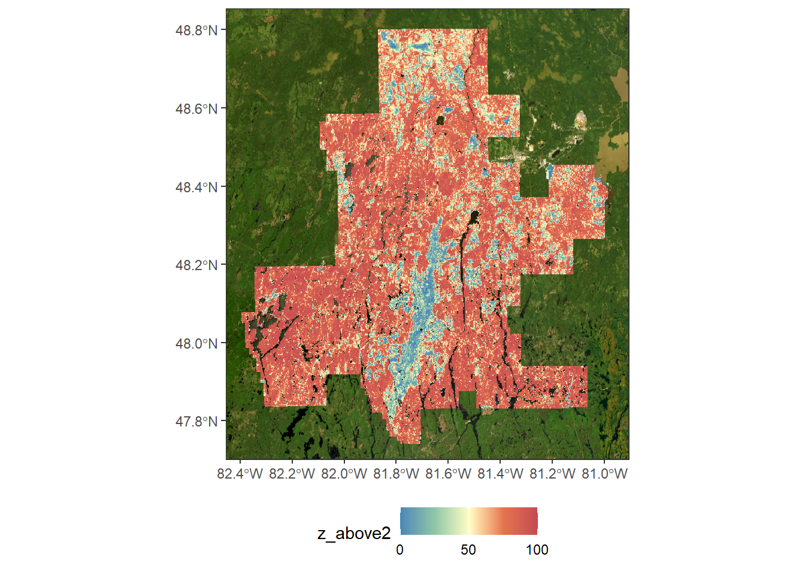
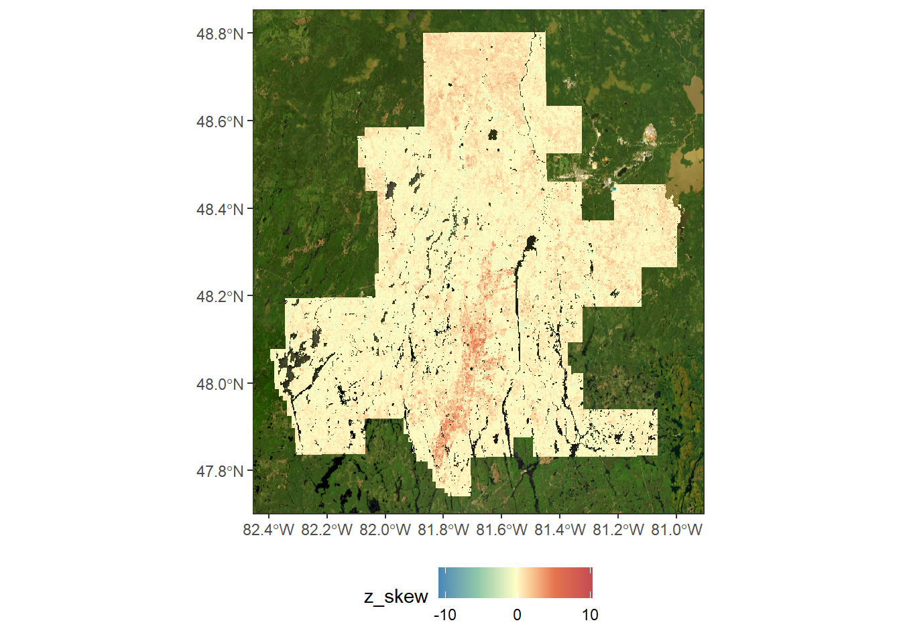
The metrics used in theses models are only one example of what can be used, but it is important to note that other metrics can be used for segmentation. All kinds of metrics that describes the forest characteristics can be used as input for this algorithm. The metrics used will reflect how the segmented polygons are divided. Thus, if a index such as the topographic wetness index (TWI) is used, the polygons will tend to separate forest stands with contrasting spectral signatures from this indice. For effective segmentation, it is recommended to use metrics that provide different informations. A correlation matrix or principal component analysis (PCA) can be used to see relationships between metrics.
3 Construction of the polygon attribute table
3.1 Input data
Most of the attributes are derived from external layers. The following layers were use :
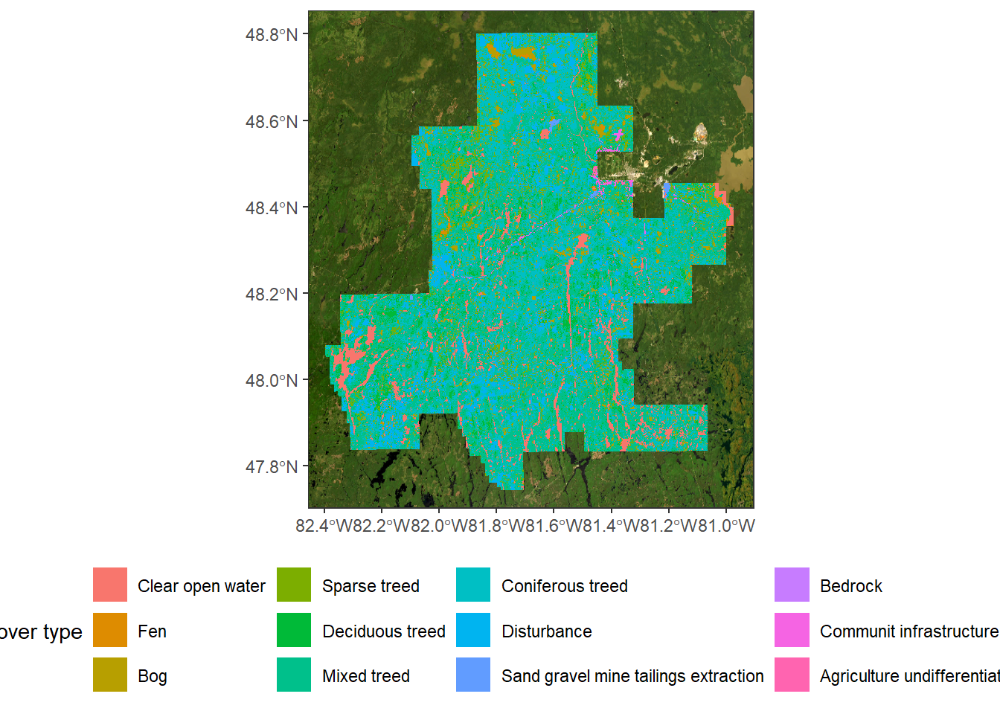
This layer come from Ontario Land Cover Compilation Version 2.0. This landcover layer was made from numerous Landsat-7 ETM and Landsat-5 TM satellite images acquired between 1999 and 2011. A mix of supervised and unsupervised classification was use to produce the 27 land cover type.
The following tree layers are part of the National Terrestrial Ecosystem Monitoring System (NTEMS) for Canada and are produced by Canadian Forest Service.
The forest age provides a 30-m resolution forest age map of Canada (2019 as reference), derived from Landsat time series (disturbance detection, surface reflectance composites, forest structure) and MODIS Gross Primary Production. Age is estimated via a hierarchical approach: direct detection from mapped disturbances (highest accuracy), spectral recovery modeling informed by forest succession where disturbance timing is inferred rather than observed, and inverted allometric equations calibrated against realized height and growth-and-yield models where no disturbance evidence exists (86.6% of area). Stands >150 years old are aggregated into a single old-growth class. See Maltman et al. (2023) for full methodology and NFI validation.
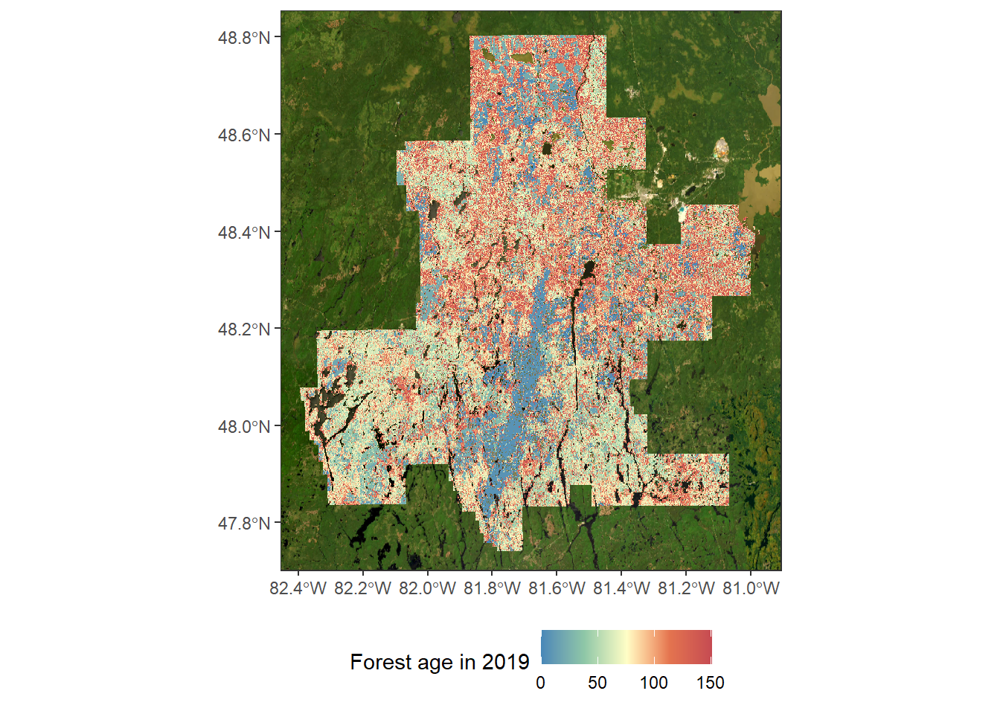
The forest fire and harvest layers maps the year of greatest disturbance for each pixel across Canada’s 650-million-hectare forested ecosystems, covering 35 years (1985-2020) at 30-m resolution. It’s built from an automated, spatially consistent Landsat time-series pipeline for detecting stand-replacing disturbances, from Hermosilla et al. (2016).
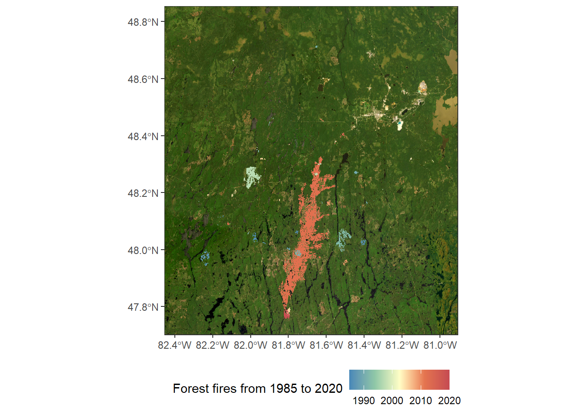
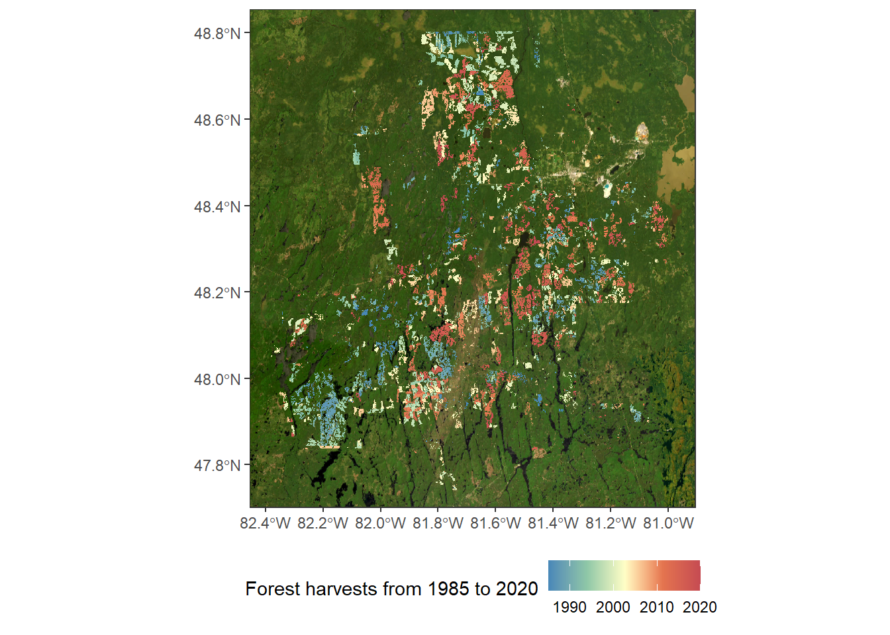
The four following layers come from […]
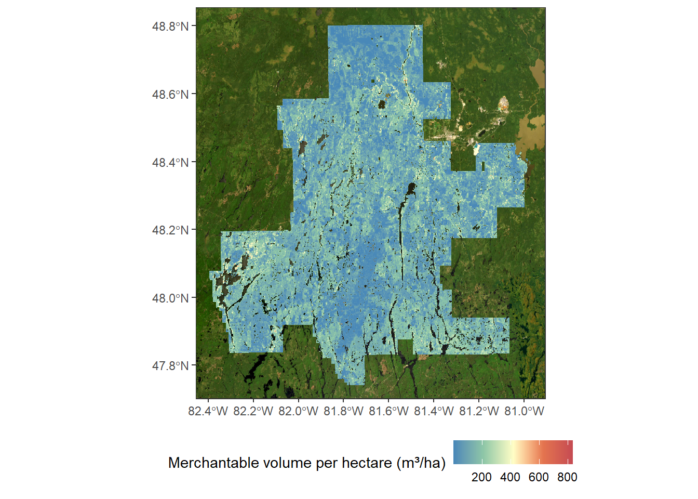
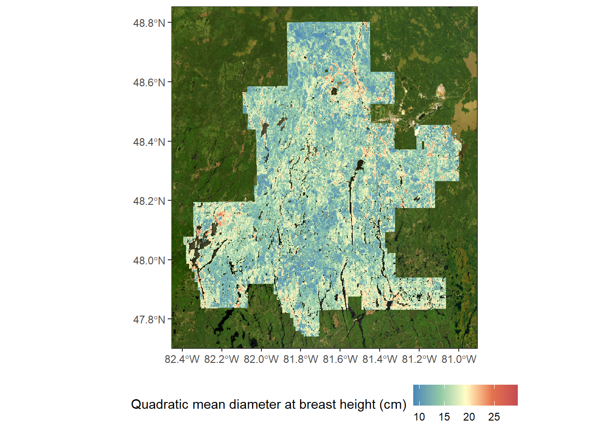
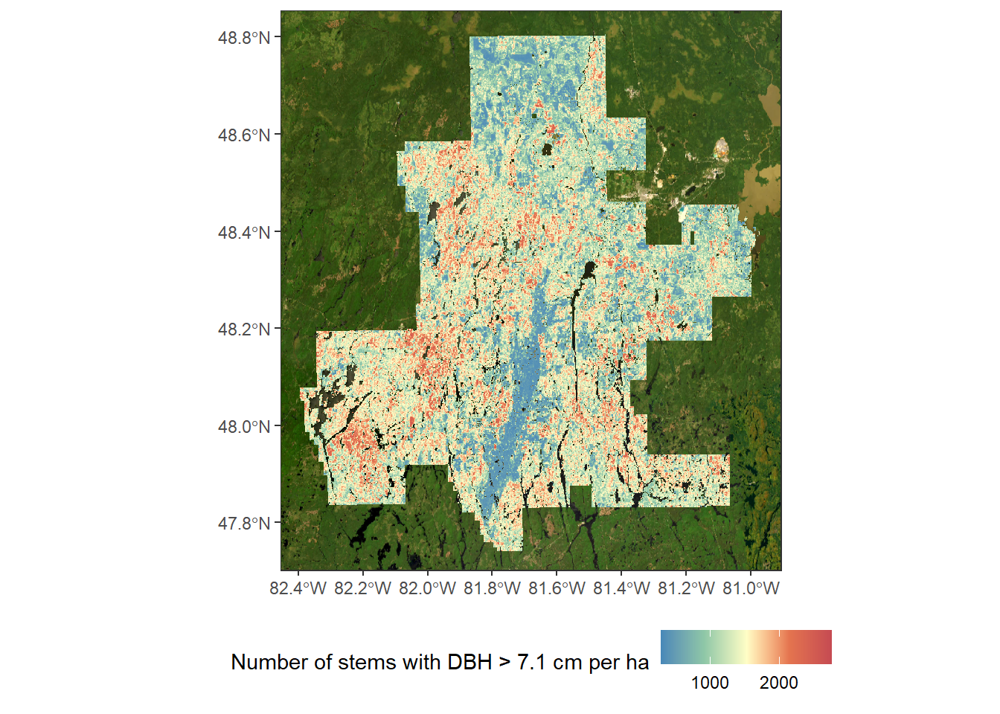
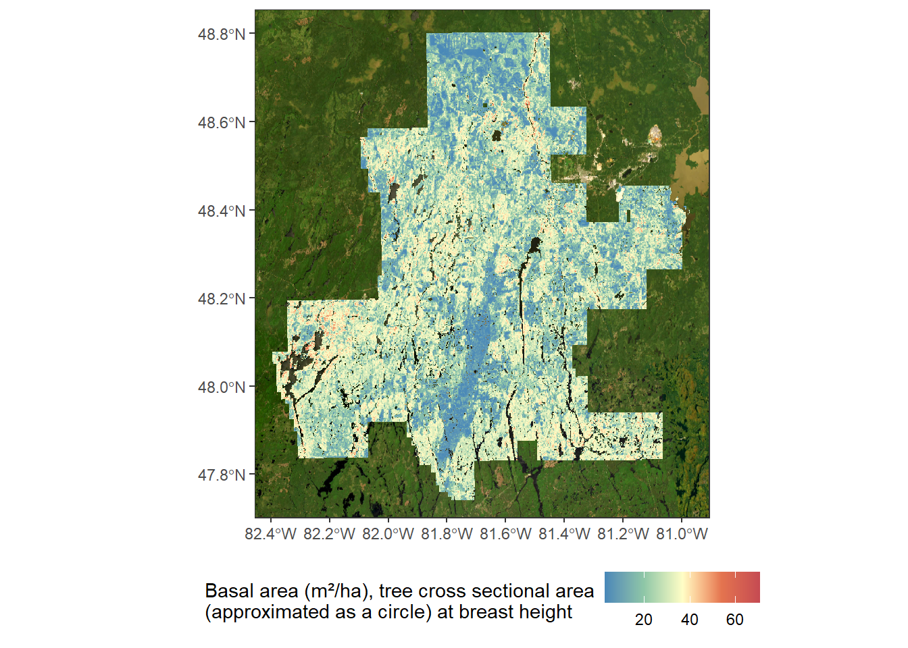
3.2 Direct assignment of available forest attributes
Extraction and aggregation of forest attributes from available geospatial datasets
The second step is to build attribute table with all pertinent attributes that forest maps have.
Here are listed the extracted attributes that lies for each polygons of automated stand polygons :
Source of data (SOURCE) → eFRI for enhance Forest Ressources Inventory;
Year of produced data (YRSOURCE) → Current year, 2026 for available automated stand delineation;
Area (AREA) → Area (m²);
Perimeter (PERIMETER) → Perimeter (m);
Proportion forested (PROPFORESTED) → Proportion (%) of polygon that are forested based on landcover raster where theses class are considered forest ones : Sparse Treed, Treed Upland, Deciduous Treed, Mixed Treed, Coniferous Treed, Plantations Treed Cultivated, Hedge Rows and Tallgrass Woodland;
Most frequent landcover type (POLYTYPE) → The most frequent landcover class based on landcover raster;
Most frequent landcover proportion (POLYTYPEPROP) → The proportion (%) of the most frequent landcover class based on landcover raster;
Forest age (AGE) → Mean forest age (year) at year of produced data based on a forest age raster layer;
Year of last disturbance (YRDEP) → Year of the last disturbance where at least 80 % of polygon stand was affected;
Type of last disturbance (DEPTYPE) → Type of disturbance : FIRE or HARVEST;
Proportion of last disturbance (DEPPROP) → Proportion (%) of the last disturbance;
Year of most widespread harvest (YRHARVEST) → Year where a harvest covered the largest proportion of stand polygon;
Proportion of most widespread harvest (HARVESTPROP) → Proportion (%) of the harvest at the year where it covered the largest proportion of stand polygon;
Year of most widespread forest fire (YRFIRE) → Year where a fire covered the largest proportion of stand polygon;
Proportion of most widespread forest fire (FIREPROP) → Proportion (%) of the fire at the year where it covered the largest proportion of stand polygon;
Merchantable volume per hectare (VMERCH_HA) → Merchantable volume (m³/ha)
Quadratic mean diameter at breast height (QMDBH) → Quadratic mean diameter at breast height (cm)
Number of stems (DENS) → Number of stems with DBH > 7.1 cm per ha
Basal area per hectare (BA_HA) → Basal area (m²/ha), tree cross sectional area (approximated as a circle) at breast height
Height of forest stand (HEIGHT) → Height (m) of forest stand based on median z_p95
Canopy cover (CANOPY_COVER) → Canopy cover based on median z_above2
Median slope (SLOPE) → Median slope (%)
Soil moisture (MOISTURE) → Soil moisture based on SAGA wetness index
3.3 Imputation using a k-nearest neighbour (kNN) approach
Some attributes can’t be directly extracted from a raster layer containing the information. For example, there is still no layer describing tree species across Ontario. For this task, k-nearest neighbor (kNN) imputation can be used to infer what would be some attributes. This widely used method use similarity between variables from two different datasets. In order to fill a missing data, the algorithm identifies the k most similar observations based on distance of common variables. The missing values are then estimated using the corresponding values from these neighbors, often by taking their mean (for numerical variables) or mode (for categorical variables).
To identify the most suitable metrics for kNN imputation, a performance analysis was conducted using all possible combinations of five uncorrelated metrics. The combinaison with the highest accuracy was retain as the one using the best metrics. This analysis was done for each variable being imputed and each forest. This analysis evaluated, for each combination, how accurately the imputed values matched the observed values of the photo-interpreted forest inventory polygons. First of all, polygons intersecting a fire or a harvest whose year falls between the year of photo-interpretation and the year of LiDAR acquisition were removed. Indeed the photo-intepreted polygons no longer describe what the LiDAR metrics saw. Secondly, only forested polygon were retain by applying four filters. The polygons where column “POLYTYPE” was “FOR” were retain, where the proportion forested was higher than 50 % based on landcover raster, where the z_p95 was higher or equal than 5 m and where pz_above2 was higher or equal than 0,5. Finally, to filter correlated metrics, clustering was performed with of a threshold of 0,8. For every metric of a cluster, a one-way ANOVA was run with the imputed variable in order to keep the metric with the highest F-value inside each cluster. Depending of the variable being imputed, 7865 or 9633 combinations of five metrics were tested. Therefore, the optimal combination of metrics depends on the specific variable being imputed. In addition, for each of these 5 metrics, the X and Y coordinates of polygon centroid have been used for the imputation.
4 Performance assessment
In an inventory setting, useful delineations should produce units that are internally homogeneous with respect to key forest attributes, distinct from neighbouring units, and delimited in ways that correspond to real structural changes across the landscape. Existing studies have shown that remotely sensed segmentation can generate relatively homogeneous units, but fewer have evaluated these complementary properties together, particularly in direct comparison with conventional photo-interpreted forest inventory maps.
Rather than focusing solely on within-unit homogeneity, we also examine whether delineations partition structural variability effectively and whether their mapped limits correspond to independently detected structural transitions. Such an evaluation is especially relevant if Automated stand delineations are to complement, or partially replace, conventional photo-interpreted inventory maps while offering gains in consistency, reproducibility, and update frequency.
In section, we evaluate the performance of automated stand delineations derived from multiple remotely sensed data sources relative to conventional photo-interpreted forest inventory maps. Using high-resolution spatial forest attributes as an independent reference, we assess whether alternative delineation approaches produce structurally homogeneous stands, partition forest landscapes into distinct structural units, and correspond to independently detected structural transitions. The analysis is intended to determine whether Automated stand delineations can provide a practical and objective basis for updating stand boundaries in operational forest inventories.
The next three analysis were conducted within the restricted 50-ha validation area to ensure independency of result. The figure of the study area show the 50-ha validation areas within each Forest Managenemnt Unit.
4.1 Reference forest attribute layers
Spatial forest attributes layers were generated using a Random Forest models calibrated with field inventory plots (Breiman, 2001; White et al., 2013; Cosenza et al., 2021). Independent Random Forest models were calibrated for each of the 8 validations area and each of the forest attributes. It had been assumed that theses areas have distinct structural and composition relationships (REF). The following modeled forest attributes were chosen to represent complementary dimensions of stand structure :
- Merchantable volume
- Stem density
- Quadratic mean diameter at breast height (QMDBH)
Models were generated using different LiDAR data of the one used to produce the automated stand delineations. This independant LiDAR data was collected in the field using a drone. Models were calibrated with ULS-derived metrics extracted over a circular 400 m² area at the location of each plot. To avoid using colinear metrics and limit model complexity, the 35 ULS initial selected metrics were grouped using an unsupervised clustering. One metric per cluster was choose yielding 18 candidate metrics.
Random forest importance was computed with a 5-fold cross-validation framework repeated 10 times. Metrics were iteratively removed based on their permutation-based importance. At each iteration and before the elimitation of the least important variable, RMSE of the model was computed. The final selected model was to one with the lowest cross-validated RMSE.
The final model was applied wall-to-wall within each validation area. A buffered area-based approach was used to produce metrics required for the models (Roussel 2026; Roussel et al., 2020). With this method, metrics are calculated at a resolution of 1 m, but using a 20 m by 20 m moving window. The size of the windows allows to keep consistency between the LiDAR predictors and the field plot metrics used to calibrate the random forest models. The buffered area-based approach allows to produced detailed forest attributes as input in the performance assessment. The forest attributes used for the performance assessment were therefore at a resolution of 1 m.
An additional attribute was the canopy height which was described by the z_p90.
4.2 Partitioning of forest-attribute variability
The proportion of variance explained (PVE) evaluates how well the segmentation partitions the landscape by comparing the variability within each resulting polygon to the total variability across the sector :
\[ PVE = 1 - \frac{SS_{\text{within}}}{SS_{\text{total}}} \]
For each polygon created by the segmentation, SSwithin is the sum of squared deviations between the pixel values it contains and that polygon’s own mean, while SStotal is the sum of squared deviations between all pixel values across the sector and the sector’s global mean. A higher PVE indicates that the polygons produced by the segmentation better explain the spatial variability of the sector, reflecting a stronger partitioning of the landscape into distinct, internally homogeneous units. It evaluate the extent to which different delineations partition forest landscapes into distinct structural units, capturing spatial variability in forest attributes.
4.3 Internal polygon homogeneity
The area-weighted mean of within-polygon standard deviations (wSD) assesses the internal homogeneity of polygons by computing the area-weighted average of the standard deviation of each predicted attribute across all stands, calculated as the sum of each stand’s area multiplied by its standard deviation, divided by the total area :
\[ wSD_v = \left| \frac{\sum_{i=1}^{n} a_i \times SD_i}{\sum_{i=1}^{n} a_i} \right| \]
A lower weighted standard deviation indicates that stands are more internally uniform, with less variability in predicted attribute values within their boundaries. It assess the internal structural homogeneity of stands produced.
4.4 Correspondence of stand boundaries with structural transitions
This analysis allows to assess the spatial accuracy of mapped boundaries by comparing them with independently detected structural transitions in forest attributes. A split moving window analysis was used to detect structural transitions from different high-resolution reference forest-attribute metrics. The metrics evaluated was canopy height described by z_p90, merchantable volume per hectare, quadratic mean diameter and stem density. This analysis detect spatial transition using a centered two-sided moving window along a transect. By comparing each side of the window, it is possible to highlight dissimilarity between each side. Locations where the dissimilarity is high are identified as potential transitions. These transitions can be used as an independent reference against which mapped boundaries from each delineation approach were compared. The F1-score was used for accuracy assessment.
The F1-score can be computed as follows :
\[ F_1 = \frac{2 \times \text{Precision} \times \text{Recall}}{\text{Precision} + \text{Recall}} \]
The F1-score summarized the balance between precision and recall :
\[ \text{Precision} = \frac{\text{True Positive}}{\text{True Positive} + \text{False Positive}} \]
\[ \text{Recall} = \frac{\text{True Positive}}{\text{True Positive} + \text{False Negative}} \]
In order to compute precision and recall a value of 1 m was used as the spatial matching tolerance between automated polygon boundaries and potential transitions. True positives are automated polygon boundaries that matched a potential transitions, False positive are actual automated polygon boundaries where no potential transitions have been found and False negative are detected potential transitions where no automated polygon boundaries was mapped.